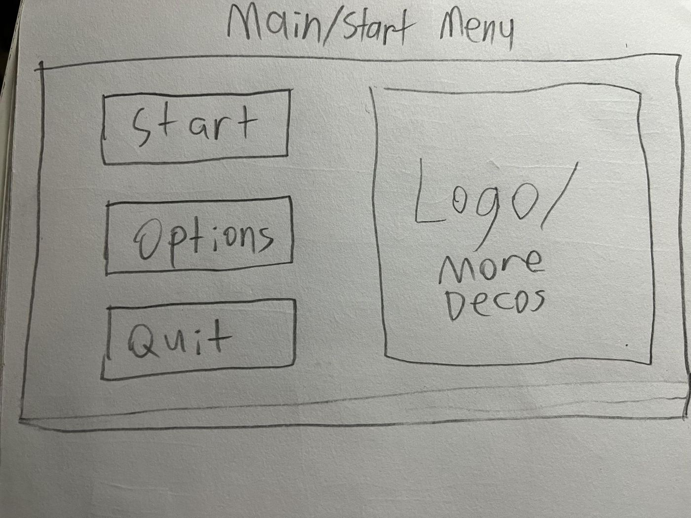
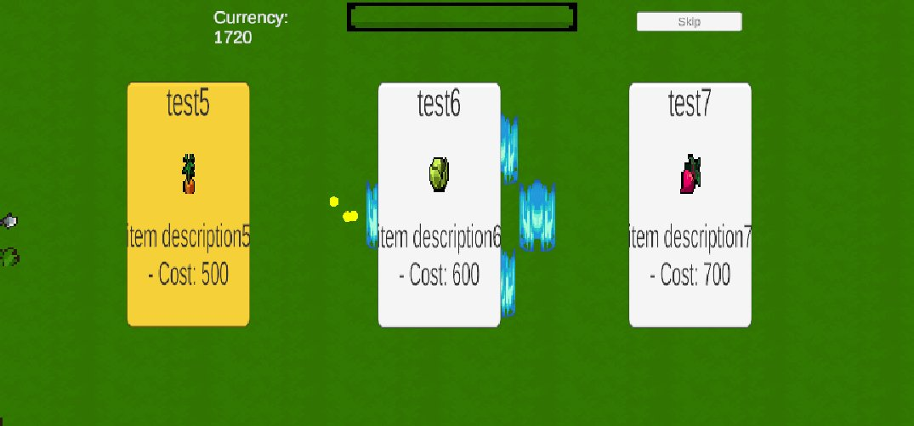
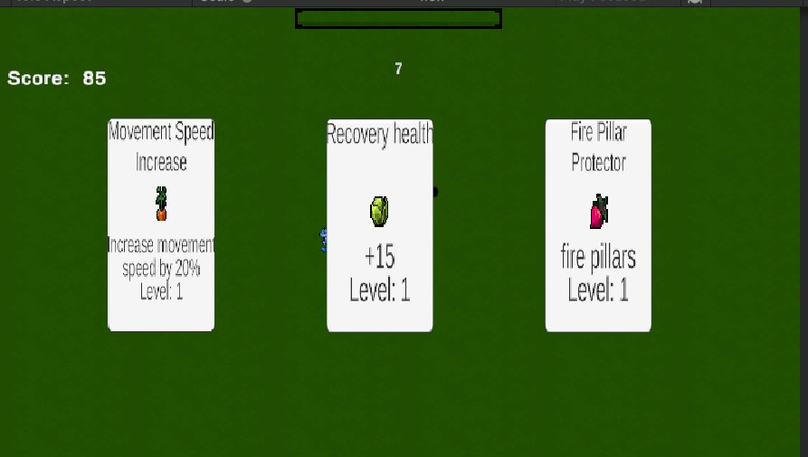
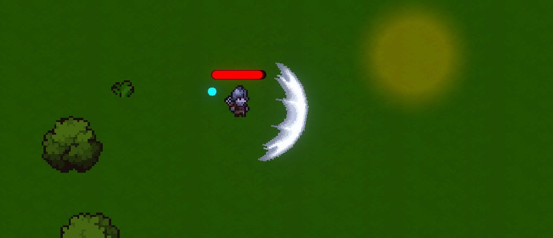
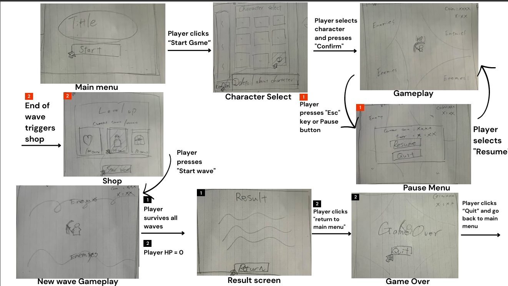

HollowsteadHollowstead
チャーム/スキルのアイディア考案とC#実装を担当し、週次スプリントごとに新しいチャームをショップ・通貨システムと統合しました。
I owned the charm/skill ideas and their C# implementation, integrating new charms into the shop and currency systems sprint by sprint.
高ファンタジー世界を舞台にした2Dトップダウンのローグライト・サバイバルです。夜の間に押し寄せる敵の波を、チャーム(お守り)や使い魔、ステータス強化を組み合わせて生き延び、日中はショップで次の波に備えます。開発中は「Demontide Cleansing」という企画名で進行し、完成にあたって「Hollowstead」という名前に変わりました。8人チームの中で私はチャーム/スキルのアイディア考案とそのC#実装を担当し、週次スプリントごとに新しいチャームを追加してショップ・通貨システムと統合していきました。
A 2D top-down rogue-lite survival game set in a high-fantasy world. Players endure escalating nightly waves of enemies using charms, familiars, and stat upgrades, then prepare for the next wave at a daytime shop. It was developed under the pitch name “Demontide Cleansing” before shipping as “Hollowstead.” On an eight-person team I owned the ideas behind each charm/skill and its C# implementation, adding new charms sprint by sprint and integrating them with the shop and currency systems.
制作プロセスDesign Process
アイディアから完成までの流れです。各ステップの詳しい資料は「資料」セクションからご覧いただけます。
The flow from idea to finished prototype. Detailed materials for each step are available in the Documents section below.
-
01
アイディアIdea
チームで一枚企画書を出し合い、夜の敵の波を生き延び、チャームや使い魔で強くなっていくローグライト・サバイバルを作ることに決めました。「パワーファンタジー」「歯応えのある難易度」「創造的なアイテム構成」の3本柱をプレイヤー体験の目標に据えています。
The team pitched one-page concepts and settled on a rogue-lite survival game: survive nightly enemy waves while growing stronger through charms and familiars. We set three player-experience pillars — power-fantasy, meaningful challenge, and creative itemisation.
ゲームデザイン文書を見る →Read the design document → -
02
ストーリーボード・紙プロトタイプStoryboard & Prototype
Unityで作り始める前に、メインメニューからショップ、ポーズ、ゲームオーバーまでの画面遷移を紙に描き出しました。ショップ画面やレベルアップ画面のレイアウトは、この紙プロトタイプの時点でほぼ確定しています。
Before building anything in Unity, we sketched the entire screen flow on paper — from the main menu through the shop, pause menu, and game over screen. The shop and level-up screen layouts were largely locked in at this paper-prototyping stage.
ストーリーボードを見る →Read the storyboard → -
03
実装(週次スプリント)Implementation (Weekly Sprints)
週11〜13にかけて、Fire Wall・Speed-boostといった最初のチャームから、EXPを元にした通貨システム、ショップとチャームの連携、Fire Pillar・Health Recovery・Damage Reduction・EXP Boosterまでスプリントごとに実装を進めました。チャームごとに独立したスクリプトを書き、共通のLevelフィールドで拡張できる構造にしています。
Across weeks 11–13 I implemented the first charms (Fire Wall, Speed-boost), an EXP-based currency system, the charm/shop integration, and then Fire Pillar, Health Recovery, Damage Reduction, and EXP Booster. Each charm is its own script with a shared Level field, so the roster can grow without touching the UI code.
週次スクラム記録を見る →Read the Scrum progress reports → -
04
仕上げ・今後の計画Polish & Cycle 3 Plans
プレイヤー・敵・武器のステータス表でバランスを調整し、UIは情報の見やすさと画面のすっきりさの2案をプレイテストで比較しました。Cycle 3では、チャームの進化合成やモンスターの移動パターン、使い魔システムなど、企画時点で構想していた要素をさらに深掘りする計画です。
We tuned Player/Enemy/Weapon stats via a balance table and playtested two competing UI directions — an information-dense HUD versus a minimal one. Cycle 3 plans call for deepening charm-evolution combinations, enemy movement patterns, and the familiar system envisioned in the original design document.
ゲームプレイ映像を見る →Watch Gameplay Video →
ゲームプレイ映像Gameplay Video
実際のプレイの様子を収めた動画です。
A video of actual gameplay.
プレイアブルビルドPlayable Build
ブラウザで遊べるWebGL版は準備中です。公開までは、上のゲームプレイ映像をご覧いただけます。
A browser-playable WebGL version is being prepared. Until it is up, the gameplay video above shows the game in motion.
資料Documents
チーム共通のゲームデザイン文書・紙プロトタイプから、私自身のコーディング担当パートを記録した週次スクラム報告までをご覧いただけます。
From the team's shared game design document and paper prototype through to my own weekly Scrum reports covering the coding work I owned.
ゲームデザイン文書Game Design Document
8人チームで作成したCycle 2のミニゲーム・デザイン文書です。ゲーム概要、コアメカニクス、UIシステム、用語集をまとめています。
The Cycle 2 mini-game design document, written by the full eight-person team — game overview, core mechanics, UI system details, and glossary.
資料を読む →Read document →画面遷移ストーリーボード & 紙プロトタイプStoryboard & Paper Prototype
Unityで作り始める前に描いた画面遷移図と、ショップ・レベルアップ・ゲームオーバー各画面の紙プロトタイプです。
The screen-flow diagram and paper sketches for the shop, level-up, and game-over screens, drawn before any UI was built in Unity.
資料を読む →Read document →週次スクラム進捗報告(Week 11〜13)Weekly Scrum Progress Reports (Week 11–13)
私自身が担当したチャーム/スキルのアイディアとコーディング実装を、週ごとの進捗として記録したものです。実装画面のスクリーンショット付き。
My own weekly progress on the charm/skill system I owned — idea design and coding implementation — with in-engine screenshots for each sprint.
資料を読む →Read document →制作の背景・工夫した点Background & Design Decisions
企画の背景Project Background
Hollowstead(企画名「Demontide Cleansing」)は「パワーファンタジー」「歯応えのある難易度」「創造的なアイテム構成」という3つのプレイヤー体験を両立させることを目標に企画されました。common/elite/majorという3段階の敵ティアと、チャーム・使い魔・ステータス強化という複数の成長経路を用意することで、簡単な敵は圧倒しつつ強い敵には歯応えを感じ、かつ自分なりのビルドを組む楽しさを狙っています。
Hollowstead (developed under the pitch name “Demontide Cleansing”) was designed around three player-experience goals at once: power-fantasy, meaningful challenge, and creative itemisation. A three-tier enemy system (common/elite/major) paired with multiple growth paths — charms, familiars, and stat upgrades — was meant to let players steamroll easy enemies while still being tested by harder ones, all while building their own run.
工夫した点Design Decisions
私が担当したのはチャーム/スキルのアイディア考案とその実装でした。週11でFire Wall・Happiness・Speed-boostという最初のチャームを作った時点では、まだ場当たり的な実装でしたが、週13でFire Pillar・Health Recovery・Damage Reduction・EXP Boosterを追加する際に、チャームごとに独立したスクリプトを書き、共通のLevelフィールドを持たせる構造に整理しました。この構造にしたことで、新しいチャーム(Lightningなど)を追加してもショップやレベルアップ画面のUIコードには一切手を入れずに済むようになっています。通貨システムも、新しい変数を増やすのではなく既存のEXP値を流用することで、既に動いているレベルアップの仕組みとの整合性を保ちました。
My part of the project was the charm/skill system — deciding what each charm should do, then building it. In Week 11, the first charms (Fire Wall, Happiness, Speed-boost) were implemented fairly ad hoc. By Week 13, adding Fire Pillar, Health Recovery, Damage Reduction, and EXP Booster pushed me to restructure: each charm became its own script sharing a common Level field. That structure meant a later charm like Lightning could be added without touching any shop or level-up UI code. The currency system reused the player's existing EXP value rather than introducing a new variable, keeping it consistent with the level-up logic that already worked.
チームでの役割My Role on the Team
8人チーム(IGB100 SCRUM Team 8)の中で、私はチャーム/スキルのアイディア考案とそのC#実装を担当しました。週次のスクラムレポートで進捗をチームに共有しながら、ショップシステムや通貨システムを担当するメンバーと連携し、チャームを購入・取得できる形に統合していきました。
On an eight-person team (IGB100 SCRUM Team 8), I owned the charm/skill system's design and its C# implementation. I shared progress with the team through weekly Scrum reports and coordinated with the teammates working on the shop and currency systems to get charms purchasable and pickable in-game.
学んだこと・今後の課題Lessons Learned & Next Steps
最初の3つのチャームをその場しのぎで実装したことで、後から機能を増やすたびにコードが絡み合っていく感覚を味わいました。週13でスクリプトを1チャーム1ファイルに分割し直したことで、追加のコストが目に見えて下がったのが大きな学びです。Cycle 3では、チャーム同士を組み合わせて進化させる仕組みや、使い魔システムなど、企画段階で構想したまま実装できていない要素に取り組みたいと考えています。
Implementing the first three charms without much structure taught me how quickly code tangles as features are added on top of each other. Splitting each charm into its own script in Week 13 visibly lowered the cost of every charm added after that — that was the biggest lesson. For Cycle 3, I want to tackle the charm-evolution combination system and the familiar system, both of which were designed on paper but never implemented in this cycle.
スクリーンショットScreenshots





